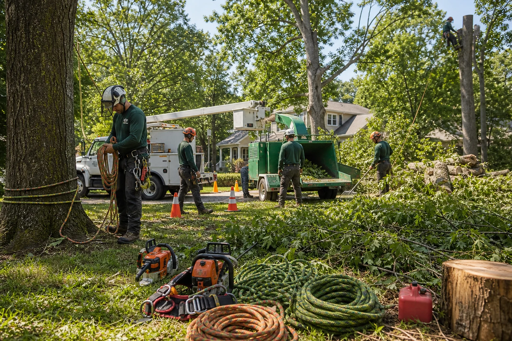
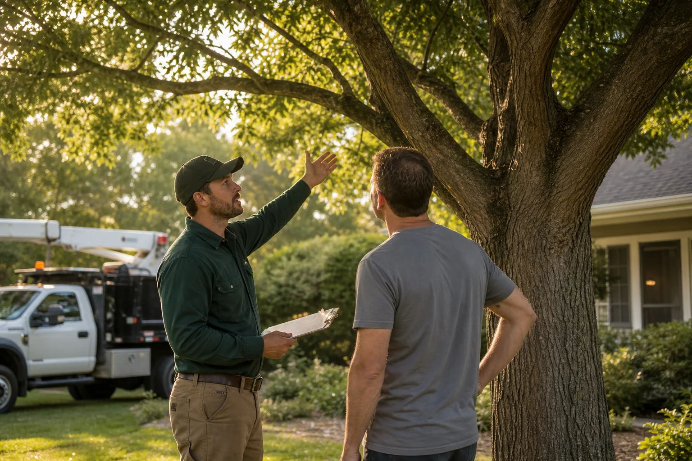

Service group
Urgent tree hazards
For leaning trees, storm damage, blocked access, cracked trunks, and removal requests that may need fast provider follow-up.
ArborLine is a free service that helps homeowners connect with independent local providers for removals, pruning, storm cleanup, stumps, brush, and property clearing.
Homeowners usually come to ArborLine when the issue feels urgent, confusing, or hard to explain to multiple companies one by one.
Tree problems are stressful when they involve storm damage, blocked access, leaning trunks, or cleanup decisions. Our site helps homeowners organize the request and seek contact from independent providers who may be able to help.
View provider categories
The most common tree requests fall into a few practical groups. Each group links to the detailed provider categories when you need a narrower match.
For leaning trees, storm damage, blocked access, cracked trunks, and removal requests that may need fast provider follow-up.
For pruning, clearance, deadwood, canopy concerns, visible decline, pest signs, decay, or questions about whether a tree should be monitored.
For stumps, brush piles, vines, saplings, overgrowth, downed limbs, and yard areas that need to be opened up or hauled away.

ArborLine helps with the search and request flow. The final hiring decision belongs to the homeowner, so every provider conversation should include basic verification.
Share the tree issue, location, access limits, photos, and urgency level.
The request is organized around the service category and local coverage area.
Independent providers may follow up to discuss availability, scope, and pricing.
The homeowner confirms license, insurance, terms, and contractor fit before hiring.
These answers set expectations clearly: ArborLine helps with routing, while independent providers handle estimates, scheduling, pricing, and the work itself.
No. ArborLine is a free service that helps homeowners connect with independent local providers. Contractors and providers are not employees of this site.
No. The site is free for homeowners to use. Any project pricing, estimate, deposit, or payment terms are handled directly with the independent provider you choose to hire.
No. Provider availability, work quality, licensing, insurance, and completed work are the responsibility of the independent provider and should be verified by the homeowner.
If there is immediate danger, downed power lines, fire, injury, or a blocked public roadway, contact emergency services or the proper utility authority first.